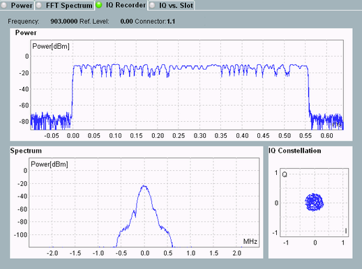

Result Diagrams
The final measurement results are typically retrieved via remote command or stored to a file.
With an R&S CMW100/CMW with MUA, the results are also displayed in the GUI. The following diagrams are not available at an R&S CMW500/2xx with BB Meas.

I/Q recorder result diagrams
The diagrams are calculated from all recorded I/Q data. There are three diagrams:
- Power vs. time diagram
The diagram covers the entire measurement duration, with the zero located between the pre-trigger samples and the post-trigger samples.
You can zoom into the diagram via the softkey-hotkey combination "Display > X Scale Power / Y Scale Power". - Spectrum diagram
Shows the spectrum around the configured analyzer center frequency. The X-axis is scaled automatically according to the filter configuration.
You can zoom into the diagram via the softkey-hotkey combination "Display > X Scale Spectrum / Y Scale Spectrum". - I/Q constellation diagram
This diagram is only available for cartesian coordinates ("Format" = "IQ", not "RPhi").
It shows the measured I/Q amplitudes as points in the I/Q plane.